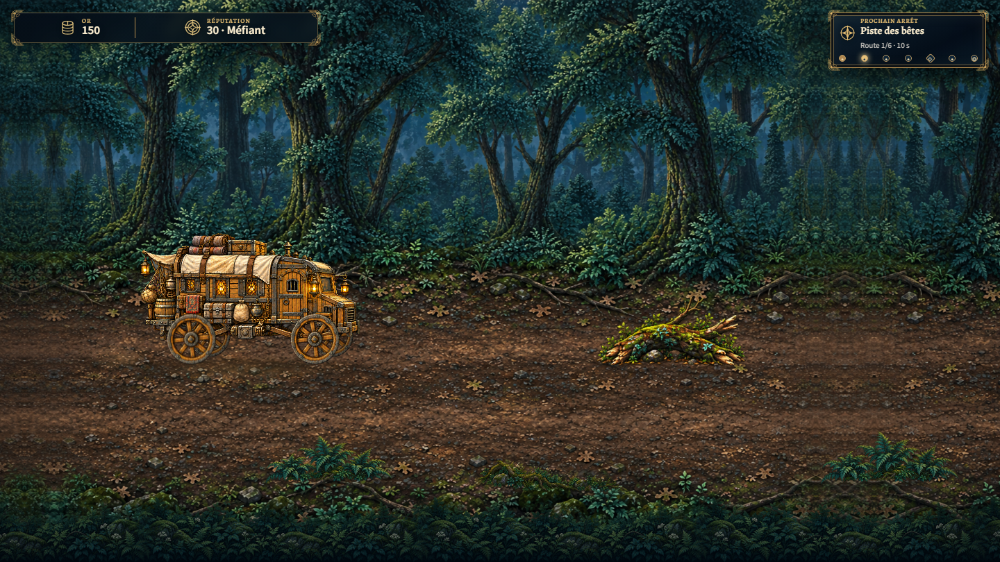
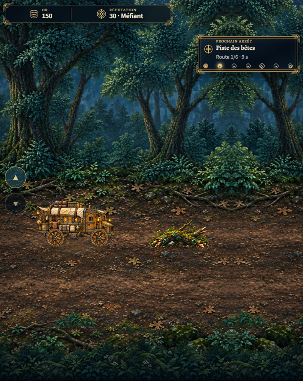
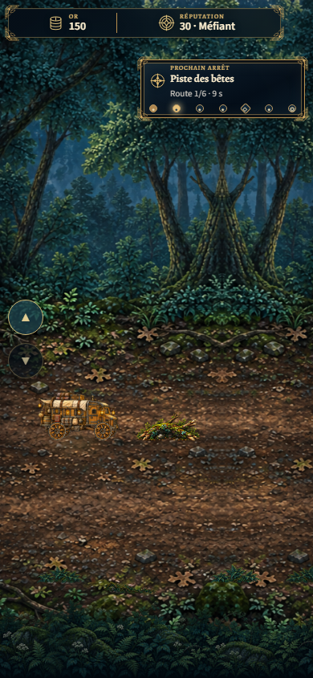
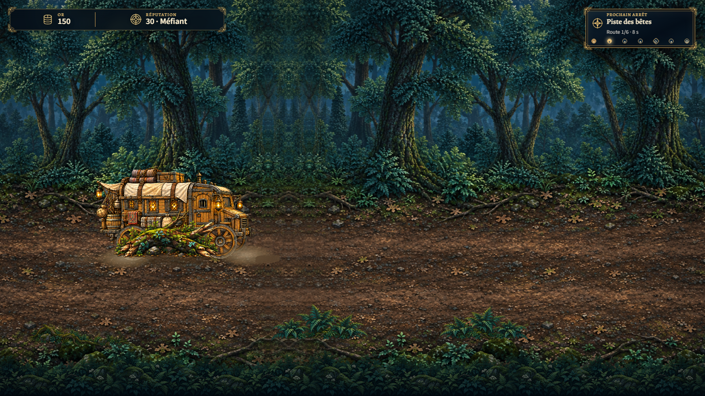
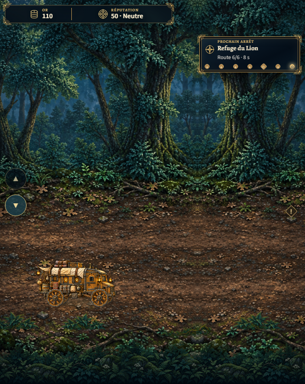
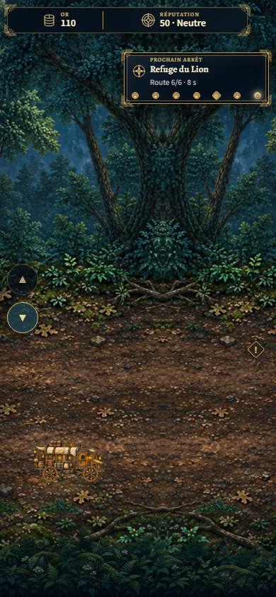
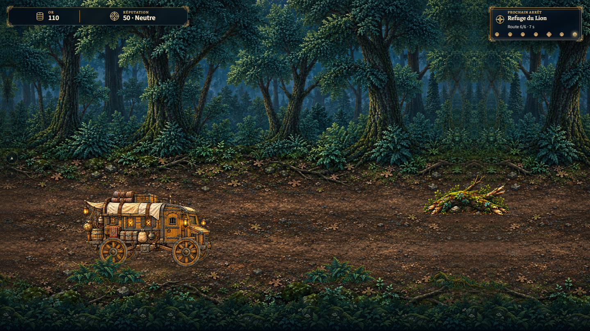
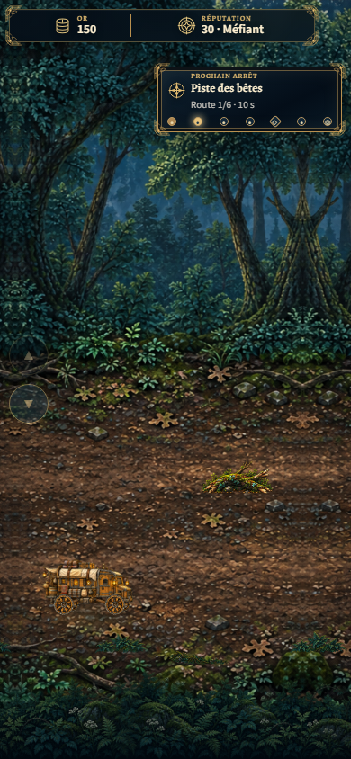
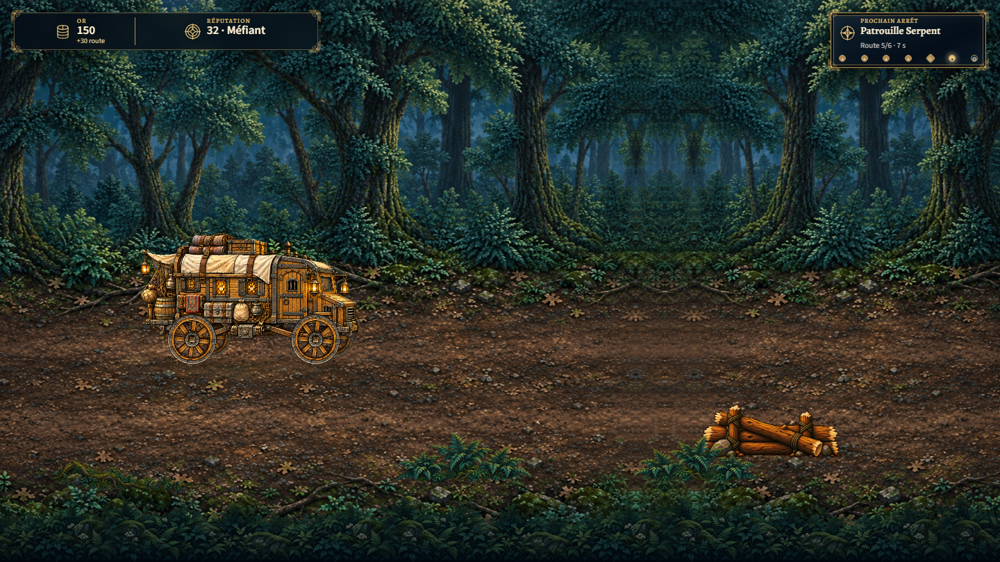

Canonical T0 browser QA · production risk on
Browser QA · Motion data

risk-r1-before.png · 1440x810
risk-r1-before-620.png · 620x780
risk-r1-before-390.png · 390x844
risk-r1-impact.png · 1440x810
risk-r6-telegraph-620.png · 620x780
risk-r6-telegraph-390.png · 390x844
risk-r6-visible.png · 1440x810 10-destination-agency.png · 1440x810
10-destination-agency.png · 1440x810
risk-r1-dodge-before-390.png · 390x844
risk-r5b-roadblock.png · 1440x810